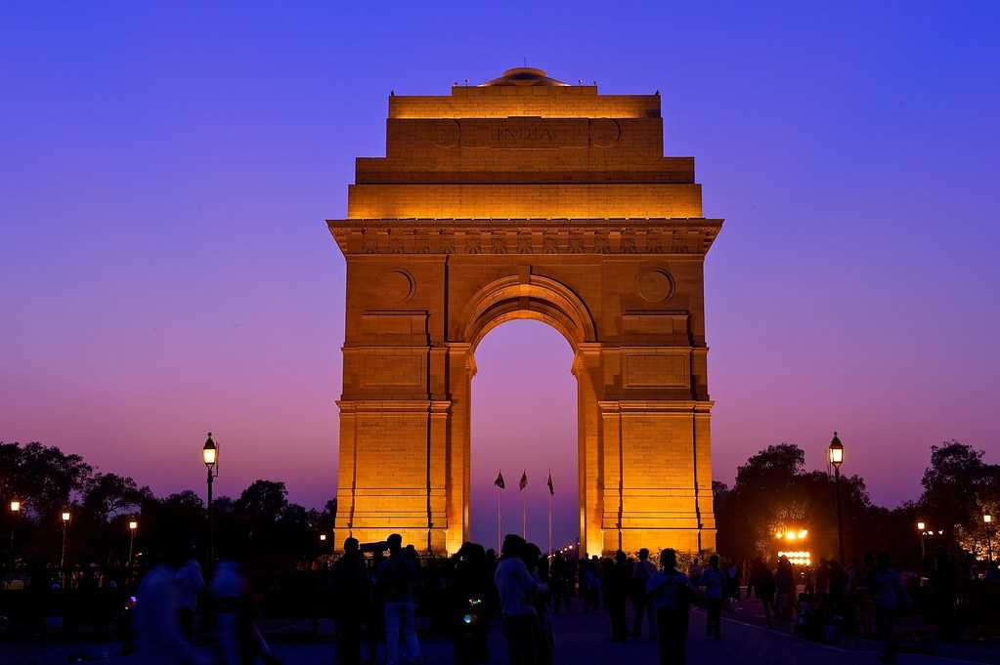

Taj Mahal
The Taj Mahal is an ivory-white marble mausoleum on the right bank of the river Yamuna in the Indian city of Agra. It was commissioned in 1632 by the Mughal ...

India Gate
The India Gate is a war memorial located astride the Rajpath, on the eastern edge of the "ceremonial axis" of New Delhi, formerly called Kingsway.The foundation stone of India Gate was laid by His Royal Highness, the Duke of Connaught in 1921 and it was designed by Edwin Lutyens.

Red Fort
The Red Fort or Lal Qila is a historic fort in Old Delhi, Delhi in India that served as the main residence of the Mughal Emperors ..

APJ Abdul Kalam
Avul Pakir Jainulabdeen Abdul Kalam was an Indian aerospace scientist who served as the 11th president of India from 2002 to 2007.

MS Dhoni
Mahendra Singh Dhoni is an Indian professional cricketer who was captain of the Indian national cricket team in limited-overs formats from 2007 to 2017 and in Test cricket from 2008 to 2014. He is a right-handed wicket-keeper batsman
Virat Kohli
Virat Kohli is an Indian international cricketer and former captain of the India national cricket team.India has given to the world many a great cricketer but perhaps none as ambitious as Virat Kohli.